01
文庙前牌坊德参天地 · 道冠古今
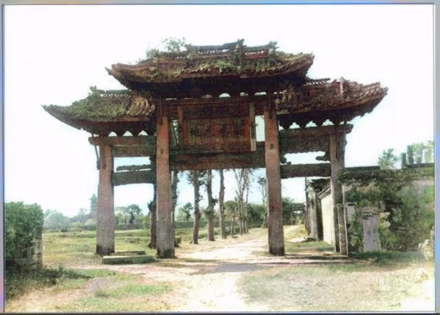
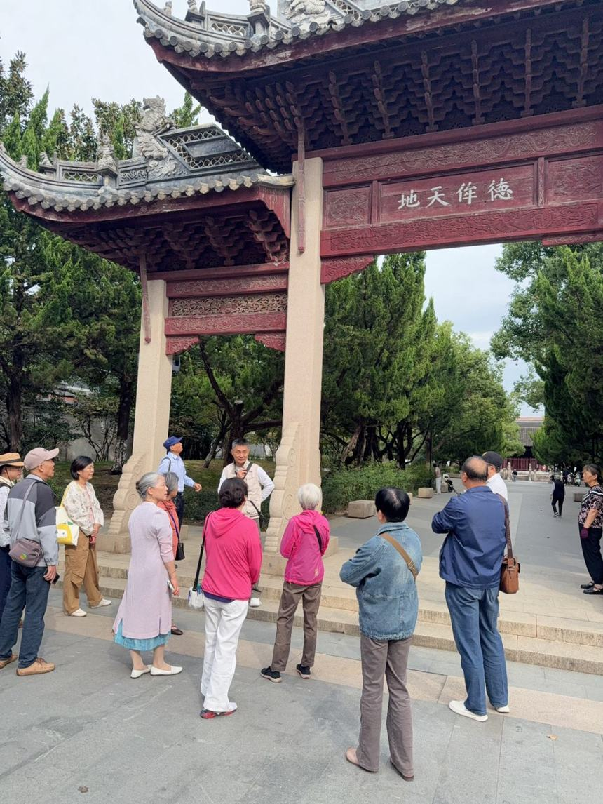
门口这两句话，是把一个人的德行捧到与天地并列——中国历史上享受这个待遇的，只有孔子。今天看到的这座是复制品，而且是把当年文庙前东西两座牌坊合成了一座。
复原了形制，却丢了原题 —— 原来是"德参天地"，复制时换成了全国通行款的"德侔天地"。
1936 年老照片里的"德参天地"坊清清楚楚，后来因新市路拓宽被拆。原物一旦拆掉，连自己的名字都可能被"通用款"顶替。


门口这两句话，是把一个人的德行捧到与天地并列——中国历史上享受这个待遇的，只有孔子。今天看到的这座是复制品，而且是把当年文庙前东西两座牌坊合成了一座。
复原了形制，却丢了原题 —— 原来是"德参天地"，复制时换成了全国通行款的"德侔天地"。
1936 年老照片里的"德参天地"坊清清楚楚，后来因新市路拓宽被拆。原物一旦拆掉，连自己的名字都可能被"通用款"顶替。
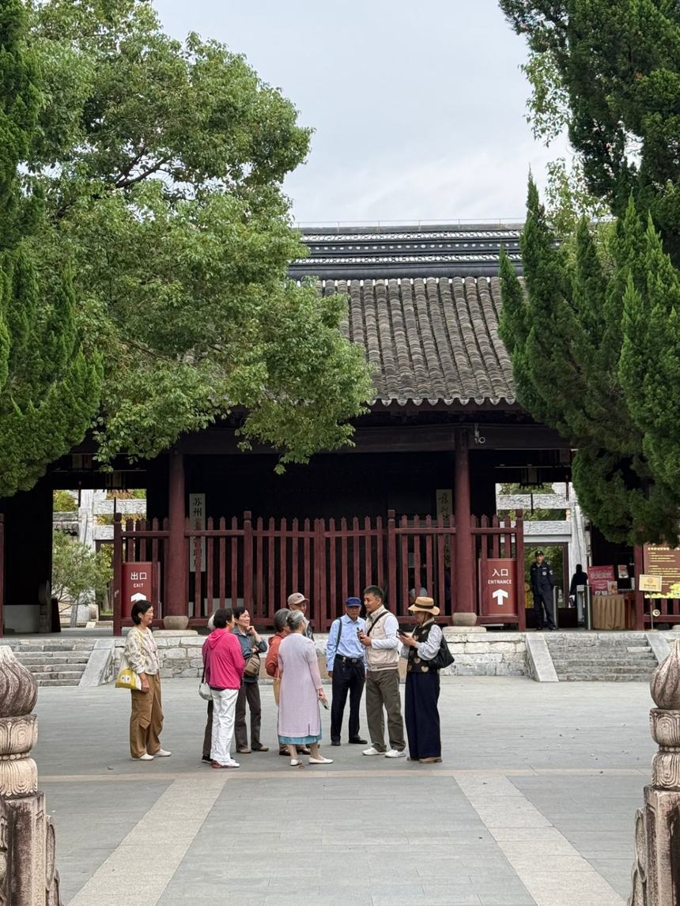
为什么偏偏是半圆？天子读书的地方四面临水，诸侯的学宫只能半面环水——"泮"就是"半"。秀才考进府学，第一件事就是从这个池子上走过去，叫"入泮礼"。
半池水，是一座府学的身份证。
旁边的"洗马池"不是洗马的地方："洗马"读 xiǎn mǎ，是官职"太子洗马"，太子的图书秘书。
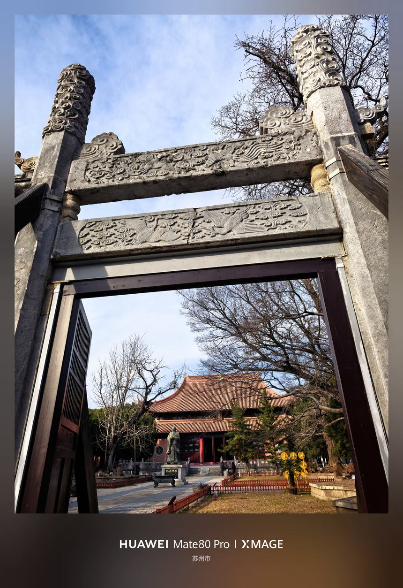
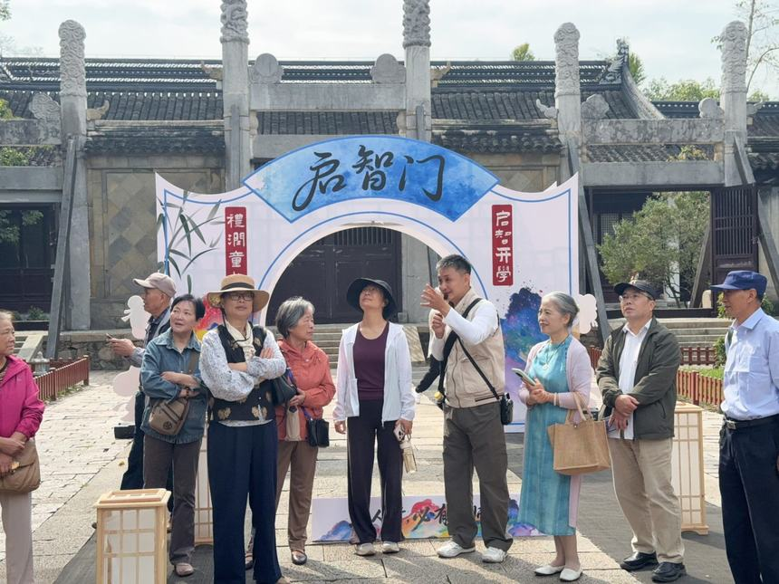
"棂星"就是天田星，管的是选拔人才。文庙的门用天上的星来命名，意思一句话：尊孔如尊天。三座门分等级——中门走皇帝，侧门走官员和读书人。
门会搬家，文脉不搬家。
这座门搬过好几次家：1322 年建成、明初往南挪约 300 米、六十年代被拆、1980 年前后构件移建现址。所以你会发现大成门反而在棂星门南边——那是搬家留下的痕迹。
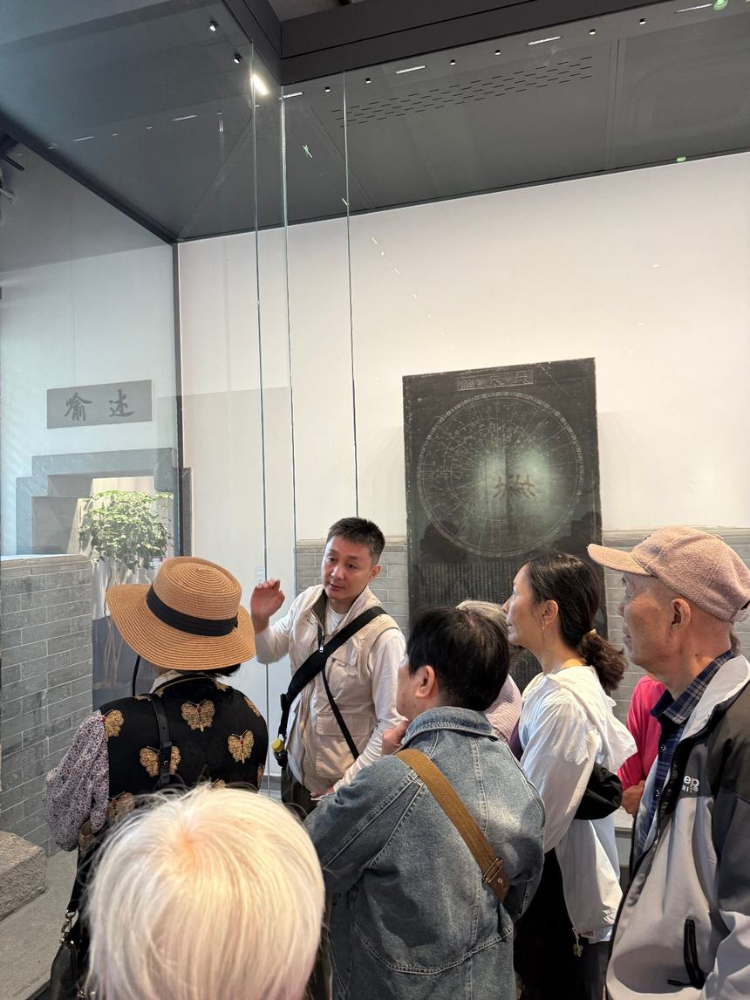
1961 年第一批全国重点文物保护单位，全国只有 180 处。那一年苏州入选六处，另外五处全是虎丘塔、拙政园这样的"大家伙"，唯独这一处是四块石碑，官方单独归入"石刻及其他"。
个头不大，地位一样。
天文图＝天、地理图＝地、帝王绍运图＝人、平江图＝城。前三碑出自南宋学者黄裳之手，平江图是苏州城的"八百年前地图"。
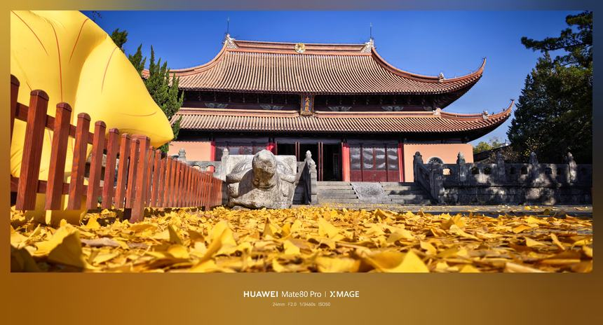
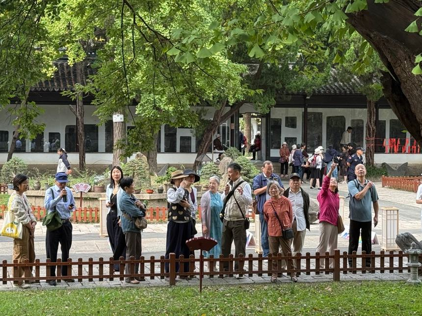
苏州城里最老的银杏群，最年长的"寿杏"约 850 岁；"连理杏"的树怀里还抱着一棵朴树。碑会风化，殿会重修，树是这里唯一从未离开过的见证人。
九百年的读书声，树都听见了。
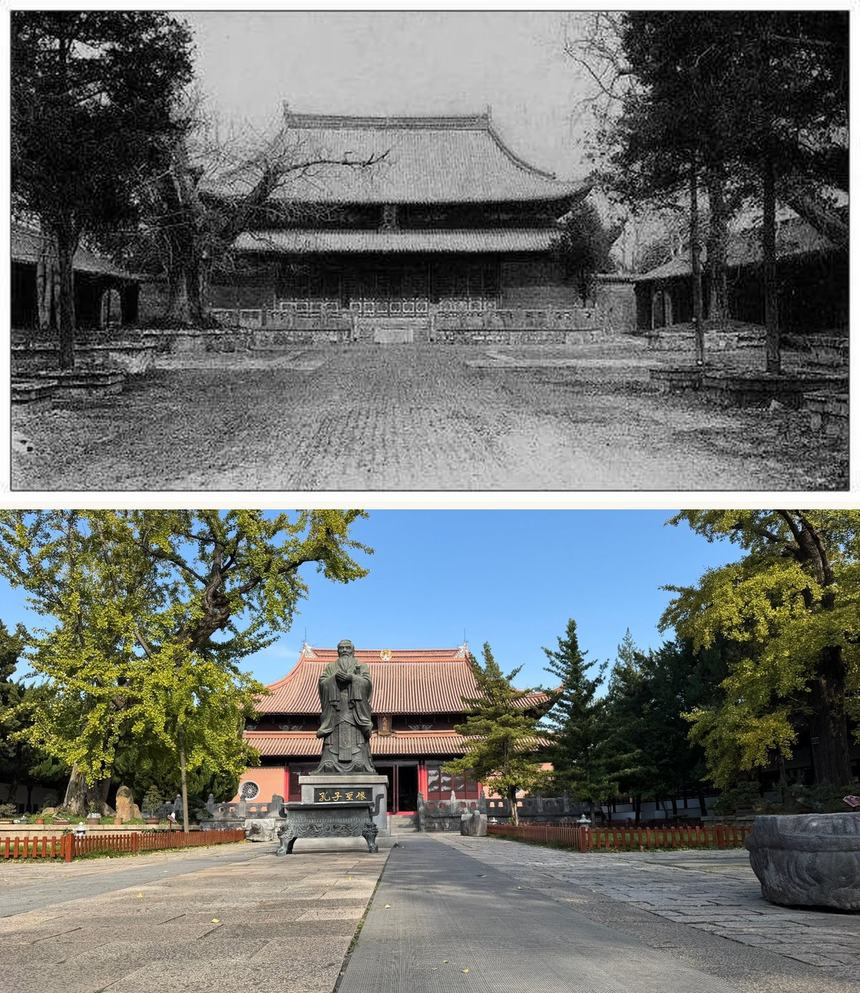
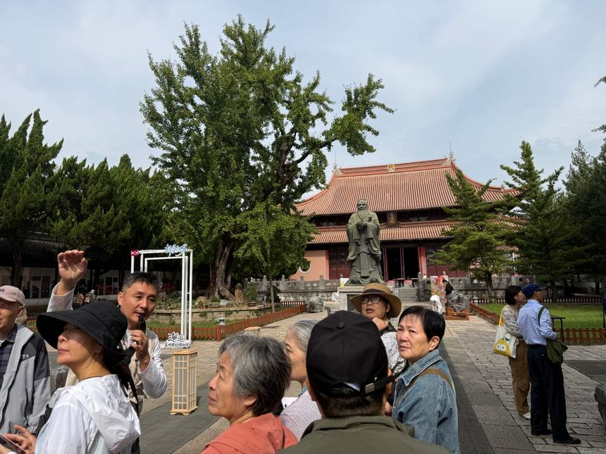
进殿做五件事：闻一下楠木香、数一数柱子、拜孔子、在"十二哲"里找出苏州的"南方学长"言偃、抬头读康熙御匾"万世师表"。
七间、十三檩、五十根金丝楠木柱 —— 全国文庙用楠木做大成殿的，仅此一家。
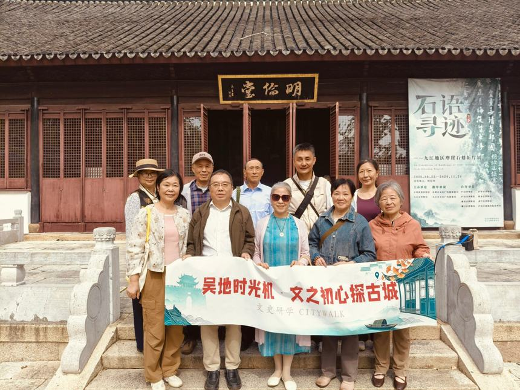
府学的讲堂。"明伦"出自《孟子》——学校教的东西会变，但"明白做人的道理"这一条不变，九百年没改过。堂上是范仲淹彩塑，上悬"一世之师"匾，楹联就是《岳阳楼记》里那两句。
一家富贵，不如让全城的孩子都在这里读书。
三国东吴郁林太守陆绩，任满回乡时船太轻压不住风浪，让船工从岸边搬了一块无主的大石压舱。别人衣锦还乡，他运回来一船石头。
九百年府学教读书，一块石头教做人。
文庙北墙之内，就是当年府学的主体，今天划入苏州中学——我们逛的文庙，只是当年学府的一小块。前有泮水、后有道山：方志里说，当年凿池挖出来的土，就地堆成了这座山。
最好的风水，是把宝地让给学校。
水在前、山在后，本来是同一抔土的两半。山顶上的道山亭故址，如今是学校的音乐教室。